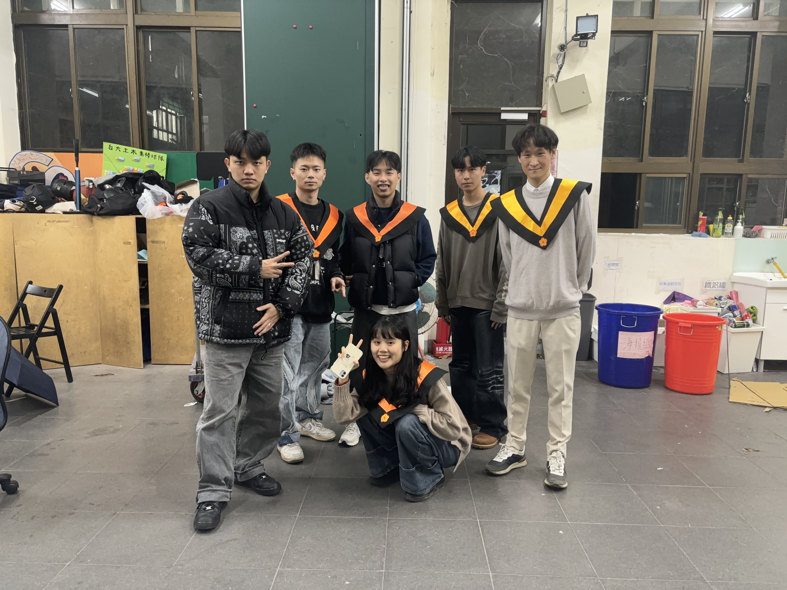
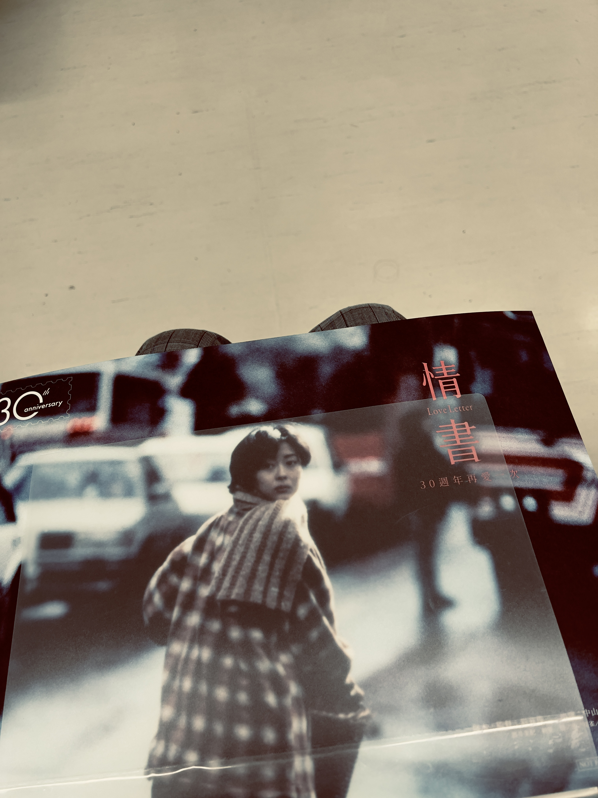

This is a month-by-month record of 2025 as I experienced it, not only through milestones but through the everyday scenes, detours, and emotions that now define how I remember the year.
January
2025 started with a pleasant gathering with all my best friends from B09s.
We finally get to have a graduation photo together. later on I started my first
project in Ke's lab. I was so excited to work on something new and challenging, but again,
I felt a bit overwhelmed by how unpredictable an AI model can be. Later this month, I went to Kaohsiung
to meet with Isabelle. Initially I planned to just have a short gathering, but it happened
to have a free concert by "Mayday" that night, so we stayed and enjoyed the music.

February
February was a short month. Started with the deadline for the JPGU meeting abstract submission, I had two abstracts,
one for the QSIS project and another for the AI-based stress-drop estimation. I also went camping with my labmates,
so glad that I got to know them better outside of the lab, they are all great people.

March
This month my final semester as an undergraduate student began. I enrolled in several interesting courses, including
"Principle of Seismology". Then I went to NCHC's headquarter for a seminar about deep learning implementation on HPC
systems. It was a great opportunity to learn about the latest advancements in AI and HPC technologies, but went to
Zhubei during rush hour was a nightmare. Later this month, one of my favorite movies "Love Letter" was re-released in theaters.

April
There was a huge earthquake in April. I was excited to see the waveform data, but due to a power issue, there was
nothing recorded. Overall, the weather in April was comfortable, except for a few massive rainstorms.

May
My birthday was on May 2nd. I invited my best friends for pizza, and I was really happy everyone came. The CE
department's graduation ceremony was also in May. I went with my dog so he could meet my friends, but it made me feel a
bit lonely knowing I couldn't graduate just yet.

June
June was rather boring. I struggled with group theory and spent most of my time in the library. Something big happened
this month, but I don't think I seized the opportunity.

July
July was a happy month. I saw old friends and met new ones. It began with a rocket launch live-stream, a visit to Ken’s
lab, and I also got to drive another Mercedes E from the car maintenance shop.

August
I visited Hualien for the first time in my life, traveling with six summer intern students. I saw the famous DAS system
and cleared some doubts about the fiber coupling issue, which is still something they need to solve. I installed one
QSIS at my house and another in Hualien. The 113-1 semester schedule also came out this month. I enrolled in
“Introduction to Field Geology (Ⅱ),” which would become quite demanding later on.

September
I attended a very interesting seminar this month, featuring several insightful but also some questionable topics. The
big news: I met my prospective master's advisor. It all began with small talk about the CE department and ultimately
planted the seed for a future collaboration.

October
Starting in October, my ear felt a bit strange. I went to the hospital and found out it was infected by mold, so I
couldn't use an earpiece for at least a month. That was unfortunate. Afterward, I visited Tainan for the first time ever
(I'm clearly not a very well-traveled Taiwanese).

November
I was super excited about November. I took graduation photos for both of my departments, had dinner with Dr. Ma,
pestered her student with my Geoscience questions, and then took a bus south for some fun in Hengchun — my first time
there. I ran into a small dilemma: I wanted a photo with a friend but also wanted her to invite me first. In the end, I
got no photos with her or of her. Looking back, I should've just asked.

December
December was uneventful. I prepared a charity Christmas gift for the fifth consecutive year. This time, I gave an
eight-year-old girl the “toy car” she wanted. I can't remember the last time I received a Christmas gift — perhaps in
high school?